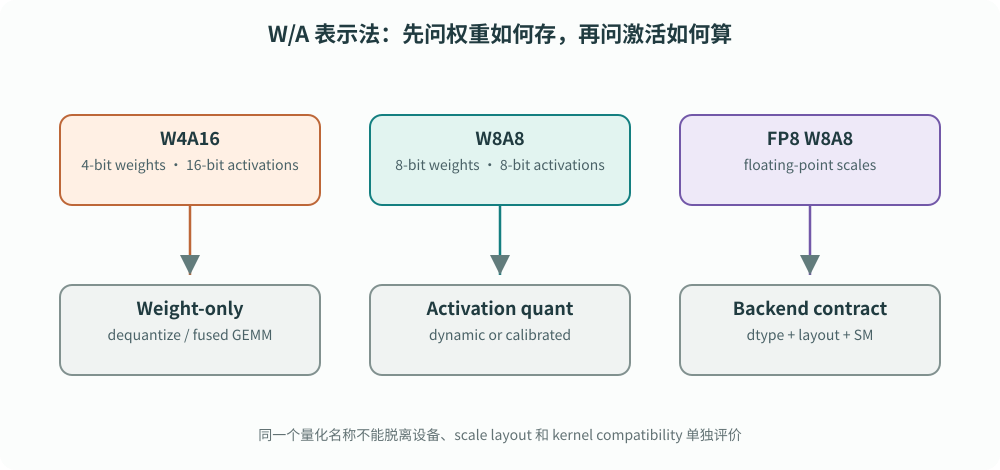
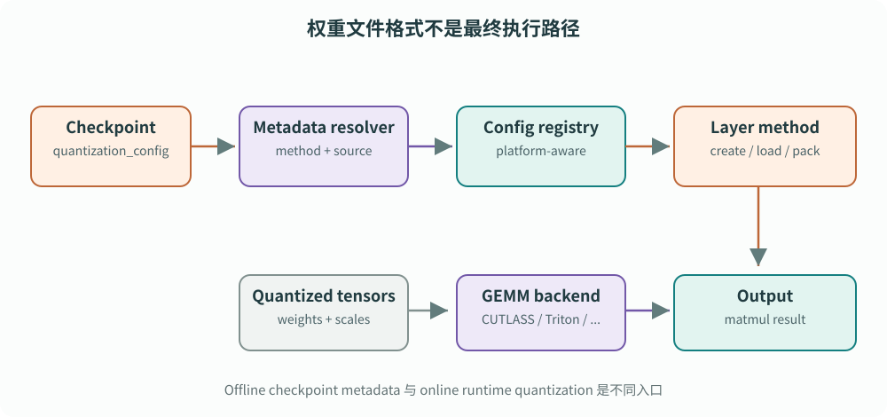

第 21 章 · SGLang 生产推理机制
Weight Quantization：从 checkpoint 到 GEMM Kernel
AWQ、GPTQ、FP8、FP4 与 W/A 量化路径：理解 checkpoint metadata、per-layer quant method、scale layout、硬件后端和精度验证。
AWQ、GPTQ、FP8、FP4 与 W/A 量化路径：理解 checkpoint metadata、per-layer quant method、scale layout、硬件后端和精度验证。 本章将论文中的算法背景、SGLang 当前实现、可复现的教学抽象与硬件限制分开说明。实现断言固定到 2026-11-23 的上游快照，不能把兼容表当成永久承诺。
读完本章，你应该能
- 画出从输入数据到运行时执行路径的关键对象。
- 解释数学近似、内存布局和 kernel/backend 之间的约束。
- 用 CPU-only toy 实验检查边界，而不把教学代码误称为 GPU 实现。
1. 量化不是“把权重文件变小”这么简单
量化会改变模型权重的表示、缩放参数、加载时的 packing，以及矩阵乘法使用的 kernel。真正的部署路径至少包含四个不同层次：**checkpoint 表示**、**运行时 quantization config**、**每层 quant method**、**硬件 GEMM backend**。一个模型即使在磁盘上标记为 FP4，也不代表任意 GPU 都能直接用原生 FP4 kernel 执行。还要区分三类对象：权重 (W)、激活 (X)、KV cache。W4A16 表示 4-bit 权重与 16-bit 激活；W8A8 表示 8-bit 权重与 8-bit 激活。KV cache 是随请求增长的运行时状态，下一章单独讨论。
2. W/A/KV：先分清量化发生在哪里

Weight-only 量化主要压缩静态参数；计算时可能需要反量化或融合反量化 GEMM。Weight-activation quantization 同时压缩输入激活，通常需要运行时 scale 或校准 scale。KV quantization 则作用于 Attention 缓存中的 K/V tensor，受 page layout 和 attention backend 的约束。
因此不能从“模型是 4-bit”推出“激活、KV、所有中间张量也都是 4-bit”。模型权重的量化格式、激活量化策略和 KV cache dtype 必须分别核对。
3. Offline quantization 与 online quantization
SGLang 文档区分两种入口。Offline quantization 加载已量化 checkpoint；GPTQ、AWQ 等方法会利用校准数据预先计算统计量并生成量化权重。Online quantization 则在运行时计算缩放参数，再把高精度权重转换到目标表示。官方文档偏向推荐 offline 路径，并明确提醒：如果 checkpoint 已经预量化，不要再用 `--quantization` 把它当作 online quantization 重做一次。这不是说 online 一定错误，而是说两条路径的输入契约不同。排障时首先检查 checkpoint 的 `quantization_config`，而不是只看启动命令。
4. Checkpoint metadata 如何映射到运行时配置

当前源码中的 `resolve_checkpoint_quant_spec` 按顺序查找顶层 `quantization_config`、多模态模型的 `text_config.quantization_config`，最后查找 `compression_config`。解析器保留声明的 `quant_method`，并复制 config，避免调用方修改原始 HF config。
随后 `layers/quantization/__init__.py` 将方法名映射到 `QuantizationConfig` 子类。注册表会根据 CUDA、ROCm、CPU、XPU、NPU 等平台调整；因此同一个名字在不同硬件上的实现类和 kernel 能力不一定相同。不要从一个平台的表格推导另一平台的兼容性。
5. 每层 QuantizeMethod：create、load、process、apply
`QuantizeMethodBase` 将量化执行抽象成几个阶段：`create_weights` 在 layer 上建立权重参数和 scale；checkpoint loader 填入数据；`process_weights_after_loading` 可以转置、重排或按 kernel 需要重新 pack；`apply` 才是运行时计算。Linear layer 与 fused MoE 还有各自的执行契约。这解释了为什么“磁盘字节数减少”并不等于“推理自动变快”：如果加载后要做额外重排、运行时要反量化、kernel 不支持目标布局，性能瓶颈可能从内存带宽转移到转换开销或 GEMM。
源码接口：base_config.py。
6. 量化公式：scale、round、clip 与 group
对一组权重 (w)，对称整数教学量化可以写为：这里的 `s` 可以按 tensor、channel 或 block 计算。Group size 越小，scale 粒度越细，但 scale metadata 更多；group size 越大，scale overhead 下降，但同一 scale 要覆盖更宽的数值范围。实际 AWQ/GPTQ 并不是上面这条通用 round-to-nearest 公式：AWQ 利用 activation statistics 保护 salient channels；GPTQ 使用近似二阶信息与逐列更新。这里的公式只是理解 scale 与误差的入口。
运行 weight_quantization.py，比较 per-row W4/W8 的重建误差和打包存储估算。该脚本不是 AWQ、GPTQ 或 SGLang kernel。
7. GEMM backend：量化格式必须匹配设备和形状
SGLang 当前量化文档列出 FP8、MXFP8、NVFP4 等 GEMM backend，例如 DeepGEMM、FlashInfer、CUTLASS、AITER、Triton 和 Marlin。自动选择顺序随 GPU 架构变化；某些 backend 只支持特定 SM 版本、某些只覆盖 MoE 或 dense linear。同样是 FP8，per-token activation × per-channel weight 与 blockwise FP8 也可能走不同 kernel。Backend 选择是 dtype、scale layout、M/N/K shape、设备能力和安装依赖的联合决策，而不是“FP8 永远走一个 kernel”。
官方矩阵和后端说明：Quantization platform compatibility / GEMM backends。
8. 精度与性能：量化后必须重新验证
量化的收益至少要分成三个维度：权重存储字节、矩阵乘法吞吐、模型输出质量。AWQ 论文强调激活感知的 salient channel scaling；GPTQ 通过近似二阶信息做 post-training quantization。它们的目标是降低量化误差，不代表任何模型、任何校准集、任何 kernel 都会得到同样结果。评测时要固定模型版本、prompt 分布、生成长度、batch/concurrency、硬件和 attention backend；同时比较任务质量、TTFT、TPOT、tokens/s、显存和加载时间。不要拿论文中的加速数字当作本仓库实测。
论文：AWQ · GPTQ · SmoothQuant。
9. 交互：选择量化路线
Quantization path selector
适用：加载已量化权重。先读取 checkpoint metadata，再选择平台兼容的 layer method 和 GEMM backend。不要重复开启 online quantization。
适用：高精度 checkpoint 在加载或运行时按配置转换。需要考虑转换成本、scale 计算与目标 backend 是否接受转换后的 layout。
适用：先确认设备能力、scale layout、dense/MoE kernel 路径，再测质量与延迟。量化格式可用不等于目标 workload 一定更快。
每条路线都需要同时验证 checkpoint contract、硬件支持、kernel path 和输出质量。
10. 源码阅读路线与参考资料
- Quantization docs：offline/online、平台兼容表和 GEMM backend。
- checkpoint_quantization.py：HF checkpoint metadata 解析。
- base_config.py：QuantizeMethodBase / QuantizationConfig 契约。
背景论文：AWQ、GPTQ、SmoothQuant。实现快照：sgl-project/sglang@563813c0d60282fa848382fec600b40d28ddec98。